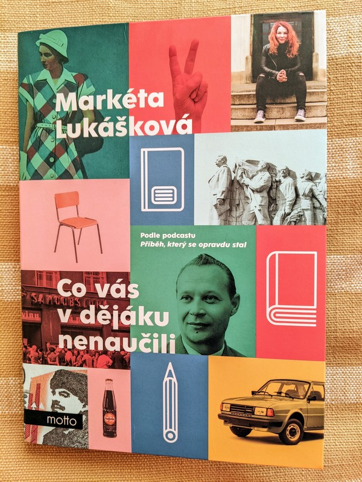

Markétu Lukáškovou a její podcast Příběh, který se opravdu stal sleduju už dlouho. Přestože bych občas snesla civilnější projev :-D, témata z moderních českých dějin, kterým se v podcastech často věnuje, jsou skvěle zpracovaná a přinášejí vždy plno zajímavých informací, na které se bohužel, jak všichni dobře víme, v hodinách dějepisu nikdy nedostalo. Když jsem se tedy doslechla, že plánuje vydat knihu Co vás v dějáku nenaučili, nemohla jsem si ji nechat ujít a objednala si ji v rámci spolupráce s knihkupectvím Megaknihy.cz.
Na první pohled mě překvapilo, že kniha je relativně malá a tenká, přesto je však nadupaná spoustou zajímavostí, které čtenáře neunudí, ale naopak mu poskytnou všeobecný vhled do života obyvatel naší země v té které dekádě. Praktické a barevně odlišené členění na 50. – 80. léta včetně revoluce dodávají knížce přehlednost. V každé dekádě se dozvíte něco o „duchu doby“, o životě běžných lidí či o sportu. Na závěr si pak přečtete rozhovory s 8 pamětníky a jejich vzpomínky na minulý režim.
Pokud nejste historií vyloženě nepolíbení a trochu se o téma zajímáte, určitě pro vás spousta věcí bude již známá. Já jsem se ale v knize přesto dozvěděla i ledacos nového. Zaujala mě třeba kapitola o řadě leteckých neštěstí na našem území v 70. letech, o kauze Olgy Hepnarové, o dopingových kauzách českých sportovců v 80. letech či o teroristických činech za minulého režimu. Poslední stránky věnované sametové revoluci soubor informací hezky uzavírají.
Jako velké plus hodnotím, že autorka předává čtenářům obrázek o neveselých časech našich moderních dějin zábavnou a čtivou formou. Podstatné informace, které by měl znát každý, prokládá perličkami a zajímavostmi. Knížka Co vás v dějáku nenaučili se rozhodně neztratí v knihovničce žádného teenagera, ale dost možná ani nás o nějaký ten pátek starších, kteří jsme se sice narodili ještě do nesvobody, ale už ji známe pouze z vyprávění našich (pra)rodičů…
